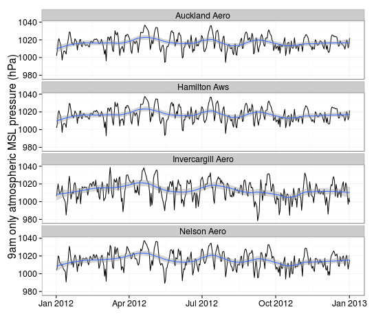
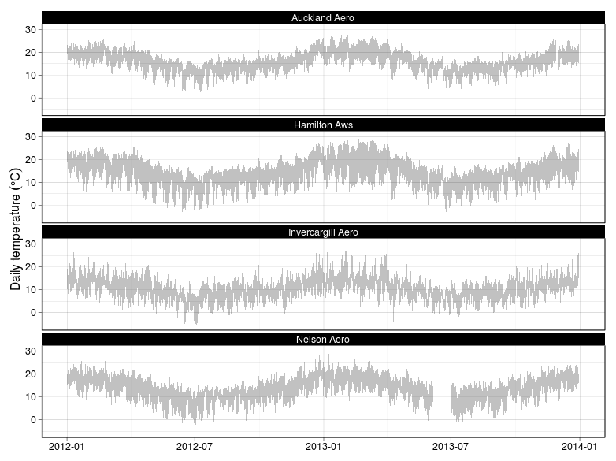
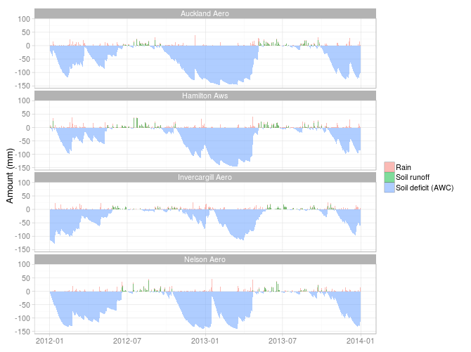

From CliFlo to clifro: An Introduction
Blake Seers
2021-07-11
Source:vignettes/clifro.Rmd
clifro.Rmd## Warning in system("timedatectl", intern = TRUE): running command 'timedatectl'
## had status 1Introduction
The National Climate Database holds climate data from around 6,500 climate stations around New Zealand including some offshore and Pacific Islands. Over 600 stations are currently active and are still receiving valuable climate data. CliFlo is a web interface to the database managed by NIWA, allowing users to submit queries and retrieve ten-minute, hourly, daily or summary data. The use of CliFlo is free given that the user has subscribed and accepted NIWA’s terms and conditions.
The clifro package is designed to make CliFlo queries much simpler and provide extensions that are currently not offered by CliFlo. The intention is to simplify the data extraction, manipulation, exploration and visualisation processes and easily create publication-worthy graphics for some of the primary datatypes, especially for users with limited or non-existent previous R experience. Experienced useRs will also find this package helpful for maximising efficiency of climate data integration with R for further analysis, modelling or export.
This vignette provides an introduction to the clifro package demonstrating the primary functionality by way of example. For more information on any of the functions in the clifro package the user is referred to the help index for the clifro package, help(package = "clifro").
Create a clifro User
As stated above, if the intention is to extract data from any station other than Reefton Ews (subscription-free) and to maximise the potential of clifro, a valid subscription is needed.
The cf_user function is all that is required to create a valid clifro user,
me = cf_user("username", "password")where username and password is substituted for the user’s CliFlo credentials.
Create clifro Datatypes
Once the user has been authenticated, the next step is to choose the datatypes of interest, see the choose datatypes vignette for details on choosing datatypes. For this example we are interested in daily MSL atmospheric pressure, minimum and maximum temperature extremes (deg C), daily rainfall (mm) and daily surface wind. (m/s).
my.dts = cf_datatype(select_1 = c(7, 4, 3, 2),
select_2 = c(1, 2, 1, 1),
check_box = list(3, 1, 1, 4),
combo_box = c(NA, NA, NA, 1))
my.dts## dt.name dt.type dt.options dt.combo
## dt1 Pressure Pressure [9amMSL]
## dt2 Temperature and Humidity Max_min_temp [DailyMaxMin]
## dt3 Precipitation Rain (fixed periods) [Daily ]
## dt4 Wind Surface wind [9amWind] m/sCreate clifro Stations
The third requisite for a valid clifro query is the station where the data has been collected. If the agent numbers of the required CliFlo stations are known, the only function needed to create a clifro station cfStation object is cf_station. See the choose station vignette for help with choosing stations when the agent numbers are unknown, and the working with clifro stations vignette for further information and methods on cfStation objects.
For this example we are interested in assessing how these datatypes differ in various parts of the country by taking a selection of stations from various regions. These include a station from Invercargill (5814), Nelson (4241), Hamilton (2112) and Auckland (1962)
my.stations = cf_station(5814, 4241, 2112, 1962)
my.stations[, 1:5]## name network agent start end
## 1 Invercargill Aero I68433 5814 1939-09-01 2020-08-18 02:00:00
## 2 Nelson Aero G13222 4241 1940-07-01 2020-08-18 02:00:00
## 3 Auckland Aero C74082 1962 1962-05-01 2020-08-18 02:00:00
## 4 Hamilton Aws C75834 2112 1989-11-30 2020-08-18 02:00:00Retrieve the CliFlo Data
Now that we have a valid clifro user and the datatypes and stations of interest, a clifro query can be conducted using the cf_query function. We are interested in all available data from 2012 to 2014.
cf.datalist = cf_query(user = me,
datatype = my.dts,
station = my.stations,
start_date = "2012-01-01 00",
end_date = "2014-01-01 00")
cf.datalist## List containing clifro data frames:
## data type start end rows
## df 1) Pressure 9am only (2012-01-01 9:00) (2013-01-01 9:00) 1468
## df 2) Max_min Daily (2012-01-01 9:00) (2013-12-31 9:00) 2923
## df 3) Rain Daily (2012-01-01 9:00) (2013-12-31 9:00) 2923
## df 4) Surface Wind 9am only (2012-01-01 9:00) (2013-01-01 9:00) 1468We can see that the pressure and surface wind data only span one year.
Plot the CliFlo Data
There is now a list of 4 dataframes in R containing all the available data for each of the stations and datatypes chosen above. The plotting is simply done with a call to plot, the type of plot and plotting options depends on the datatype. See ?'plot.cfDataList' for details on default clifro plotting. The following are examples of some of the plots possible with clifro, note how the optional ggtheme argument changes the look of the plots.
MSL Atmospheric Pressure
This is the first dataframe in cf.datalist. Since the first argument passed to plot is a list of different datatypes (cfDataList), the second argument (y) tells the plot method which of the four dataframes to plot.
We could therefore simply type plot(cf.datalist, y = 1) and get a nice plot of the MSL atmospheric pressure, but it is usually nice to modify the defaults slightly. Since the plot method returns a ggplot object, we can easily modify the plots using ggplot2.
# Load the ggplot2 library for element_text() and geom_smooth() functions
library(ggplot2)
# Increase the text size to 16pt and add a loess smoother with a span equal to a
# quarter of the window
plot(cf.datalist, ggtheme = "bw", text = element_text(size = 16)) +
geom_smooth(method = "loess", span = 1/4)
Improved MSL Atmospheric Pressure
Daily Temperature Extremes
This is the second dataframe in cf.datalist, therefore y = 2. These are temperature data showing the air temperature extremes at each of the four stations, represented by a grey region in the plot. Note that if the average temperature were available, these would be plotted too.
# Try a different ggtheme
plot(cf.datalist, 2, ggtheme = "linedraw")
Temperature Extremes
Rain
This is the third dataframe in cf.datalist, therefore y = 3. Currently there are two possible default plots available for rainfall; with or without soil deficit/runoff.
# Try yet another ggtheme
plot(cf.datalist, 3, ggtheme = "light")
# Or only plot the rainfall data
# plot(cf.datalist, 3, ggtheme = "light", include_runoff = FALSE)
Rain with Soil Deficit and Runoff
Wind
There are three types of plots available for wind data in clifro. The default is to plot a windrose displaying wind speed and directions of the full time series at each station. The windrose function in clifro is also available for the user to plot their own directional data - see ?windrose. The other two optional plots for wind data in clifro are the wind speed and wind direction plots. These plots display wind speed and direction patterns through time, adding valuable temporal information that is not portrayed in the windroses.
The wind datatype is the fourth dataframe in cf.datalist, therefore y = 4.
Wind Speeds and Directions
The other two plotting methods for wind data are the speed_plot and direction_plot functions to assess the temporal variability in wind (plots not shown).
# Plot the wind speeds through time, choose the 'classic' ggtheme and
# allow the y-axis scales to differ for each station
speed_plot(cf.datalist, 4, ggtheme = "classic", scales = "free_y")
# Plot wind direction contours through time
direction_plot(cf.datalist, 4, n_col = 2)Data Export
# Export the data as separate CSV files to the current working directory
for (i in seq_along(cf.datalist))
write.csv(cf.datalist[i],
file = tempfile(paste0(cf.datalist[i]@dt_name, "_"),
tmpdir = normalizePath("."),
fileext = ".csv"),
na = "", row.names = FALSE)
# Each dataset is saved separately here:
getwd()Summary
The primary aim of this package is to make the substantial amount of climate data residing within the National Climate Database more accessible and easier to work with. The clifro package has many advantages over using the CliFlo web portal including conducting searches much more efficiently, examining the spatial extent of the stations and enabling high quality plots to aid the data exploration and analysis stage.